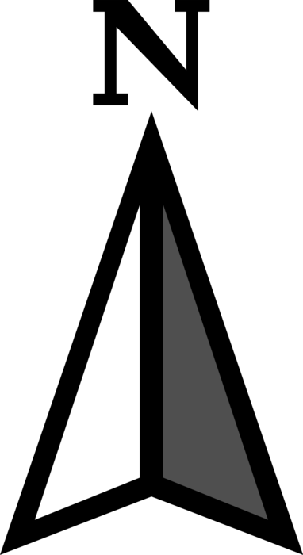

<!DOCTYPE html>
<html>

<head>
	<meta charset=utf-8 />
	<title>Casos Covid-19</title>
	<meta name="viewport" content="width=device-width, initial-scale=1.0">
	
    <link rel="stylesheet" href="https://unpkg.com/leaflet@1.6.0/dist/leaflet.css" integrity="sha512-xwE/Az9zrjBIphAcBb3F6JVqxf46+CDLwfLMHloNu6KEQCAWi6HcDUbeOfBIptF7tcCzusKFjFw2yuvEpDL9wQ==" crossorigin=""/>
    <script src="https://unpkg.com/leaflet@1.6.0/dist/leaflet.js" integrity="sha512-gZwIG9x3wUXg2hdXF6+rVkLF/0Vi9U8D2Ntg4Ga5I5BZpVkVxlJWbSQtXPSiUTtC0TjtGOmxa1AJPuV0CPthew==" crossorigin=""></script>

<style>
	html, body {
            height: 100%;
            margin: 0;
        }
        #map {
            width: 100%;
            height: 100%;
        }
		.info h4 {
	    margin: 0 0 5px;
	    color: #777;
	}
	.legend {
	    text-align: left;
	    line-height: 25px;
	    color: #555;
	}
	.legend i {
	    width: 18px;
	    height: 18px;
	    float: left;
	    margin-right: 8px;
	    opacity: 0.9;
	}
	.legend .colorcircle {
	    border-radius: 50%;
	    width: 20px;
	    height: 20px;
	    margin-top: 20px;
	}
	.legend .circlepadding {
	    border-radius: 50%;
	    margin-top: 0px;
	    background: rgba(63, 90, 12, 0);
	}
	</style>	
</head>

<body>

	<header>
	</header>

	<div id="map"></div>

	

	<script src="https://cdnjs.cloudflare.com/ajax/libs/leaflet/1.3.4/leaflet.js"></script>
	<script src="./Data/casos.geojson"></script>
	<script>
		// map options
		var options = {
			center: [39.7, -8.0],
			zoom: 6
		}

		// create a Leaflet map in our division container with id of 'map'
		var map = L.map('map', options);
		
		L.control.scale({position:'bottomleft', metric: true}).addTo(map);

		var north = L.control({position: "topright"});
		north.onAdd = function(map) {
    		var div = L.DomUtil.create();
   	 	div.innerHTML = '';
   		 return div;
		}
		north.addTo(map);
		// Leaflet providers base map URL
		var basemap_source =
			'https://server.arcgisonline.com/ArcGIS/rest/services/Canvas/World_Light_Gray_Base/MapServer/tile/{z}/{y}/{x}'

		// Leaflet providers attributes
		var basemap_options = {
			attribution: 'Tiles &copy; Esri &mdash; Esri, DeLorme, NAVTEQ',
			subdomains: 'abcd',
			maxZoom: 16
		};

		// request some basemap tiles and add to the map
		var tiles = L.tileLayer(basemap_source, basemap_options).addTo(map);

		casos.features.sort(function (a, b) {
			return b.properties.capacity_mw - a.properties.capacity_mw;
		});
		
		map.attributionControl.addAttribution('Número de casos: &copy; <a href="https://covid19.min-saude.pt/">Direção-Geral da Saúde</a>');
		
		//create circle size legend
		var sizelegend = L.control({
		    position: 'bottomright'
		});
		//generate legend contents
		sizelegend.onAdd = function (map) {
			//set up legend grades and labels
		    var div = L.DomUtil.create('div', 'info legend'),
			grades = [ 100, 300, 600, 900],
			labels = ['<strong>Nº de casos</strong>'],
			from, to;
		    //iterate through grades and create a scaled circle and label for each
		    for (var i = 0; i < grades.length; i++) {
			from = grades[i];
			to = grades[i + 1];
			labels.push(
			'<i class="circlepadding" style="width: '+Math.max(0,(19-1.8*getRadius(from)))
			+'px;"></i> <i style="background: #3f5a0c; width: '+getRadius(from)*2
			+'px; height: '+getRadius(from)*2
			+'px; border-radius: 50%; margin-top: '+Math.max(0,(9-getRadius(from)))+'px;"></i> ' 
			+ from);
		    }
		    div.innerHTML = labels.join('<br>');
		    return div;
		};
		sizelegend.addTo(map);
		
		// var popup = '<h3>' + hotspots[i].name + '</h3>'
		// Load power plants
		L.geoJson(casos, {
			filter: function (feature) {
				if (feature.properties.Casos_14_1) { // This test to see if the key exits
					return feature;
				}
			},
			pointToLayer: function (feature, latlng) {
				return L.circleMarker(latlng, {
					color: '#3f5a0c',
					weight: 1,
					fillColor: '#3f5a0c',
					fillOpacity: 0.3,
					radius: getRadius(feature.properties.Casos_14_1)
				});
			},
			onEachFeature: function (feature, layer) {
				var popup =
					'<p><b>Concelho: ' + layer.feature.properties.Concelho + '</b></p>' +
					'<p>Casos: ' + layer.feature.properties.Casos_14_1 + ' </p>' 
					
				layer.on('mouseover', function () {
					layer.bindPopup(popup).openPopup();
					layer.setStyle({
						fillColor: 'yellow',
						fillOpacity: 1
					});
				});

				layer.on('mouseout', function () {
					layer.setStyle({
						fillColor: '#3f5a0c',
						fillOpacity: 0.3
					});
					layer.bindPopup(popup).closePopup();
				})

			}
		}).addTo(map);

		function getRadius(area) {
			var radius = Math.sqrt(area / Math.PI);
			return radius * 2;
		};
	</script>

</body>

</html>
